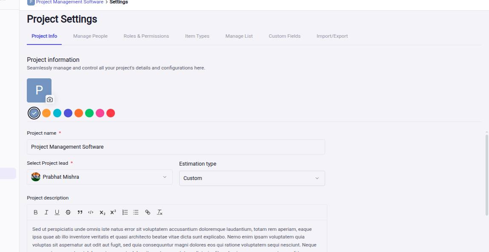
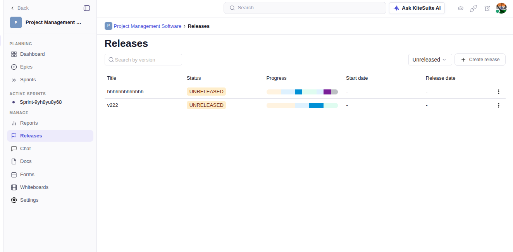
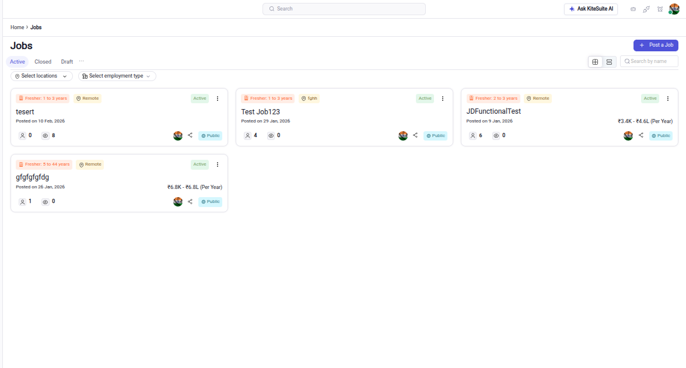
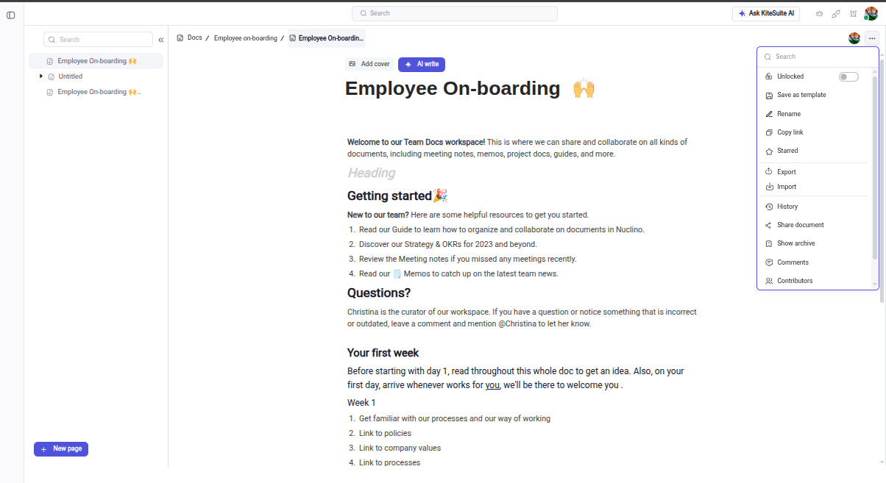
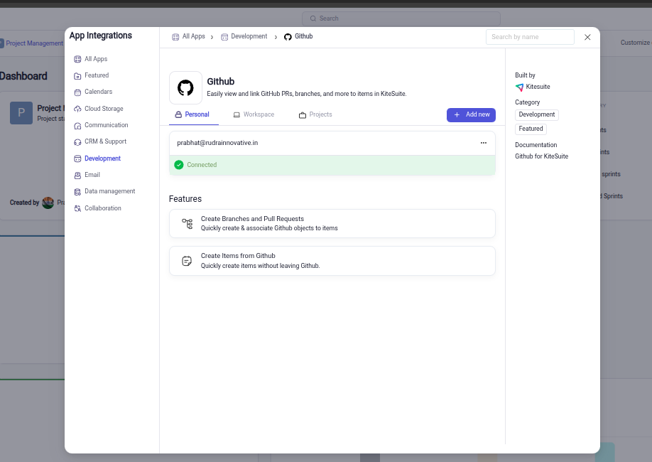

Product surface
Angular interfaces, responsive workflows, state and interaction.
FULL-STACK PRODUCT ENGINEER · AI / GENAI
I build production SaaS, AI-powered workflows and the systems that connect them — from product surface to API, data, integration and deployment.
01 · FLAGSHIP
Instead of presenting a list of small projects, this portfolio leads with a production SaaS platform and the engineering decisions behind it.

KITESUITE · PRODUCTION SAAS
A multi-surface workspace connecting projects, people, recruiting, documents, meetings, forms, communication, time and integrations.




02 · SYSTEMS
The work does not stop at the interface. I think through the API, data model, integrations, failure states and the path to production.
Angular interfaces, responsive workflows, state and interaction.
REST contracts, authentication, validation and service boundaries.
MongoDB, Mongoose, aggregation, indexing and retrieval.
OAuth, webhooks, external APIs and product-to-product workflows.
LLM integration, model providers, embeddings and semantic retrieval.
Testing, observability, deployment, fallbacks and failure handling.
03 · ENGINEERING FIRST
Good engineering is not only about making a feature work. It is about understanding the failure modes, the user workflow and what happens after the merge.
Start with the workflow, constraints and contracts before choosing implementation details.
Loading, validation, permissions, retries and empty states are part of the feature.
Frontend, API, data, integrations and deployment should tell the same story.
Apply models to a real workflow, with attention to latency, access, errors and observability.
04 · GENAI
The useful part of GenAI engineering is connecting a model to a real product problem and making the surrounding system reliable.
Model-provider integration for application workflows, prompts and controlled responses.
Exploring vector representations and retrieval patterns for finding meaning across product data.
Latency, fallbacks, access control, errors and observability belong around the model.
05 · EXPERIENCE
A foundation in full-stack product development, followed by deeper work across SaaS systems, integrations, quality and AI-enabled workflows.
Sumedha Softtech Pvt. Ltd. · Jaipur
Built and maintained full-stack applications with React, Node.js, Express and MongoDB; worked on performance, authentication, APIs, database optimization and CI/CD.
Fleet management & field services platform
Worked on real-time fleet dashboards, REST APIs, MongoDB aggregation and backend scalability.
KiteSuite · SaaS product contribution
Contributing across product surfaces and engineering workflows spanning HRM, ATS, projects, meetings, docs, forms, integrations and AI-enabled features.
06 · PROOF
The portfolio should show the engineering path, not just the final screenshot.
07 · ABOUT
I'm Asendra Chauhan, a full-stack/product engineer focused on turning product requirements into reliable web systems.
My background spans React, Angular, Node.js, MongoDB, APIs, authentication, integrations, testing and deployment, with growing focus on practical GenAI engineering.
08 · CONTACT
Have a product, platform or engineering problem worth solving? Send a note.